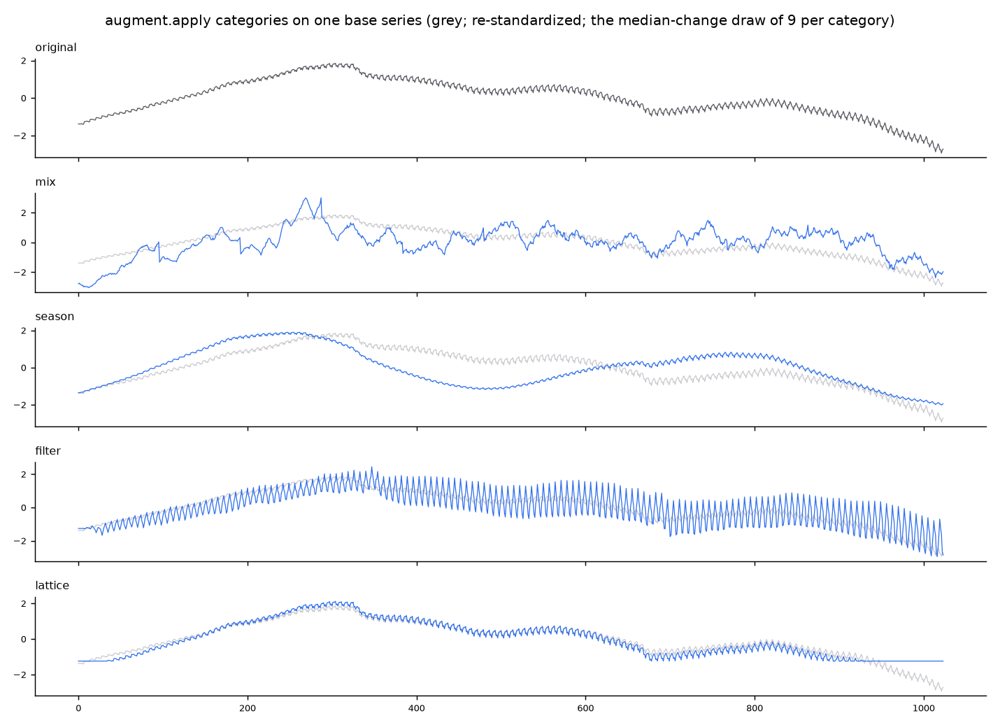
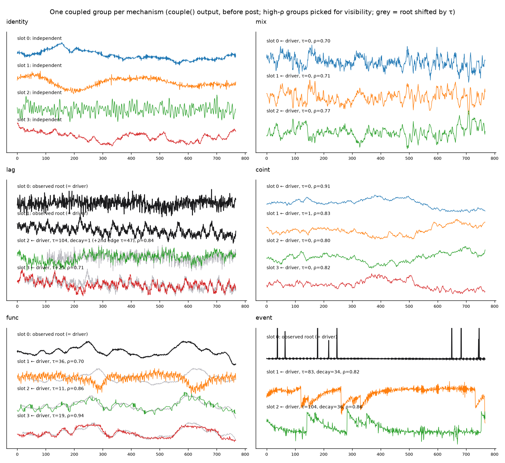
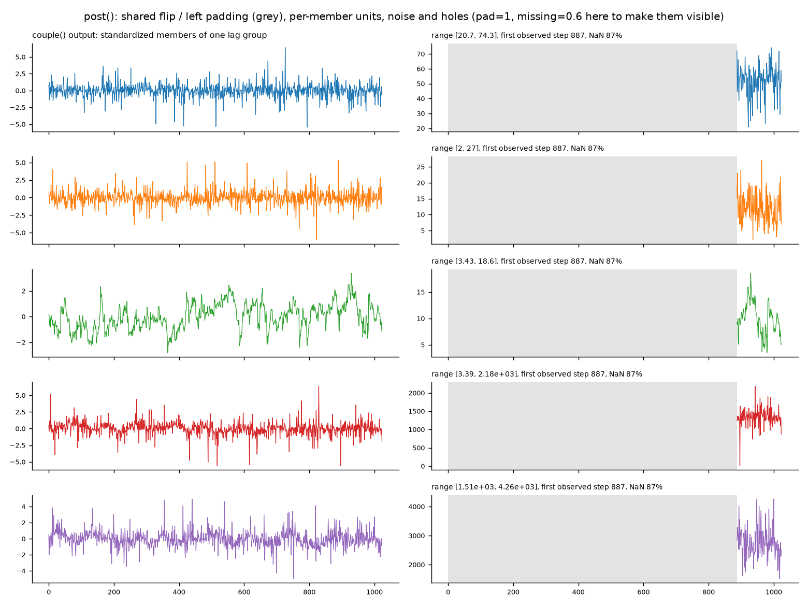

Simons 合成数据：生成过程与训练中的用法
src/simons/synth/ 是 Simons 的合成数据生成器。它不落盘、不预生成：每个训练进程在 GPU 上维护一个序列池，池里的序列先由 18 个单变量「族」按权重生成并做一轮增强，其中一半的行再被耦合成共享 series ID 的多变量组，最后叠加观测效应（计数噪声、随机单位、左截断、缺失空洞），直接替换训练 batch 的最后若干行。池用完就整池重建，每条序列只用一次。
本文围绕五个问题组织：单变量怎么生成（第 3 节）、耦合前有没有挑选与增强（第 4 节）、多变量怎么构造依赖与 lead-lag（第 5 节）、生成之后有没有挑选、预测任务怎么定、有没有后处理（第 6 节）、时间轴与频率（第 7 节）。第 8 节把这些放回四个训练阶段，讲每个阶段用多少合成数据、用哪些族、带不带协变量角色。
想先看整体图景，可以先看另外两页：生成流程 画出从「族采样」到「进 loss」的完整流程（附 18 个族、6 种耦合机制、观测效应与时间轴的总表），训练阶段 只讲四个训练阶段 × 四种模型规模各自怎么用合成数据、一行 batch 长什么样、协变量角色怎么分配。
文中的参数都直接取自代码与 configs/*.yaml。标了「实测」的数字是用 CPU 跑 plan / MultiPool.build 抽样得到的，命令在第 9 节。图由 make_figures.py 生成（PYTHONPATH=src python docs/synth/make_figures.py，CPU 约 20 秒）。
1. 一条合成序列从生成到进 loss
- 按族生成：
draw(n, length, …)把 n 条的配额按族权重确定性地拆给各族（int(n·w/Σw)，余数给列表第一个族），各族在同一长度上批量生成，拼接后整体打乱、NaN 置 0、逐行 z-score。 - 单变量增强：仍在
draw里，augment.apply让 40% 的行经过 1–2 类变换（mix / season / filter / lattice），再 z-score。 - 多变量耦合（一半的行）：
MultiPool把一行 32 个槽切成若干组，每组选一种机制（identity / mix / lag / coint / func / event），在频域里把 driver 经「延迟 × 指数平滑 × 系数」传给成员，再与成员自己的序列按信号占比ρ混合。耦合用的底料就是第 1–2 步的输出。 - 观测效应：
post依次做时间翻转、计数 / 冲击 / 尖峰噪声、（阶段 1/2）duty 开关、符号翻转与随机单位、左侧截断、随机空洞。翻转和截断在组内共享，其余逐条独立。 - 协变量角色（阶段 2 起）：
RolePlanner把一部分耦合组的成员标成已知未来的协变量，并给目标成员加末端遮挡块。 - 进 batch：
SyntheticMixer用池里的序列替换 batch 的最后round(fraction·rows)行，series ID 为1_000_000 + 组号。 - 进 loss：packing 按 series ID 拼窗、跳过前导 NaN；模型在每个 patch 位置预测下一个 patch 的 9 个分位数；连续 patch 遮挡（CPM）把部分输入换成 NaN，但保留它们的目标。
四个容易混的词：
| 词 | 是什么 | 在哪定 |
|---|---|---|
| 行（row） | batch 的一行，32 个槽（MAX_VARIATES = WIDTH = 32），每槽一条序列 |
synth/multi.py: WIDTH |
| 组（group） | 一行里共享同一 series ID 的若干槽。变量注意力只在组内发生，组就是模型眼里的「一个多变量序列」 | _group_sizes |
| 族（family） | 单变量的生成方法，共 18 个 | base.family_makers |
| 机制（mechanism） | 组内序列之间的依赖构造方法，共 6 种 | multi.MECHANISMS |
还有一处命名要注意：配置文件叫 stage1～stage4，但它们的 stage 字段只有两种取值。stage: stage1 是纯合成训练（配置文件的阶段 1、2 都是它），stage: stage2 是真实数据加 40% 合成（阶段 3、4）。下文的「阶段 N」一律指配置文件的编号。
2. 代码在哪
| 路径 | 作用 |
|---|---|
src/simons/synth/base.py |
公共积木（周期库、傅里叶周期项、谱采样、GP）、kernel / sarima 两族、draw、post、SyntheticMixer |
src/simons/synth/nonstat.py |
sde / step / spike |
src/simons/synth/causal.py |
cauker / rhythm / wave / fpfn |
src/simons/synth/heavy.py |
levy / ets / pulse |
src/simons/synth/mech.py |
chaos / epi / hydro / thermal（轨迹库）与 queue（直接计算） |
src/simons/synth/calendar.py |
calendar |
src/simons/synth/augment.py |
单变量增强四类 |
src/simons/synth/observe.py |
观测链接（link / mult）与 duty 开关 |
src/simons/synth/multi.py |
多变量：plan（组与边的结构）、couple（频域耦合）、MultiPool |
src/simons/synth/covariates/ |
「目标 + 协变量」任务：effects.py（基础协变量与效应），families.py 里 5 个效应族 generic / classical / energy / retail / lagged |
src/simons/training/trainer.py |
make_mixer、multi_pool，把合成池、角色、协变量 pass 接进训练循环 |
src/simons/training/schedule.py |
合成占比随步数变化：share_function、ramp_rows |
src/simons/training/covariates/roles.py |
耦合组的角色分配 RolePlanner、效应行 effect_row、Hook |
src/simons/training/covariates/stream.py |
阶段 3/4 的独立协变量 pass |
src/simons/training/objective.py、packing.py |
CPM、next-patch pinball loss、按 series ID 打包 |
src/simons/training/data.py、augment.py、warp.py |
真实数据窗口与它们的增强（都不作用于合成行） |
configs/simons-<规模>-stage{1,2,3,4}.yaml |
族列表与权重、各种占比 |
3. 单变量：18 个族、6 大类（问题 1）
3.1 统一入口 draw
所有族的签名都是 maker(gen, n, length, device) -> [n, length]，在设备上批量生成：
def draw(n, length, gen, device, families=("kernel", "sarima"), weights=None):
total = sum(weights)
split = [int(n * w / total) for w in weights]
split[0] += n - sum(split) # 余数给第一个族
parts = [makers[f](gen, k, length, device) for f, k in zip(families, split) if k]
x = torch.cat(parts)
x = x[torch.randperm(n, generator=gen, device=device)]
x = torch.where(torch.isfinite(x), x, 0)
x = _standardise(x) # 逐行均值 0、标准差 1
return augment.apply(gen, x) # 单变量增强（第 4 节）
三点要记住：
- 配额是确定性拆分，不是逐条抽签。一个池子里各族的条数几乎正好等于权重比例，小权重的族也不会因为运气被漏掉。
- 输出一律是标准化的。真实单位（量级、偏移、符号、计数）全部推迟到
post才加上。 - 长度由调用方给定。所有族都在同一个
length上生成，所以同一次draw的序列天然等长（这是第 5.5 节「长度不一致」问题在合成侧不存在的原因）。
3.2 六大类、十八个族

按「生成原理」分成 6 类，与代码的模块划分一致：
A. 统计 / 谱方法（base.py）
| 族 | 方法与关键参数 | 会出现的形态 |
|---|---|---|
kernel |
KernelSynth：1–5 个分量，类型为周期 0.4 / GP 0.25 / 白噪声 0.15 / 线性或斜坡 0.2。第 2 个分量起有 40% 取首个周期的整数倍（×2、4、7、12、24、52），构成嵌套季节。每次合并 20% 是乘法、80% 是加法 | 多重季节、趋势、平滑漂移、季节 × 趋势 |
sarima |
在频域构造稳定的 SARMA 传递函数：70% 有 AR 复极点对（外加实极点）、MA 零点、季节 AR/MA（周期取自 SEASON_BANK）、30% 分数阶差分。滤波白噪声后 40% 积分一次、30% 季节积分。70% 再叠一条拉伸 4–64 倍的慢 SARIMA 包络，一半乘性、一半加性 |
短记忆相关、单位根、长记忆、时变方差 |
B. 非平稳 / 状态切换（nonstat.py）
| 族 | 方法与关键参数 | 会出现的形态 |
|---|---|---|
sde |
两状态切换的 OU 过程：切换率 LogU(1/8192, 1/256)，慢态 θ∈U(0.05, 0.5)、快态 θ∈U(1, 5)，两态均值在两侧。均值 70% 叠趋势、60% 叠周期；θ 20% 时变；σ 带趋势 / 周期 / GP 调制；20% 用 Hurst∈U(0.3, 0.8) 的分数高斯噪声。_ou_scan 用 float64 分块线性递推做精确离散化 |
均值回复、波动聚集、状态突变 |
step |
1–10 个变点，水平是 Laplace 累加；段型 平 0.5 / 斜 0.3 / 随机游走 0.2。20% 开关型，30% 高斯模糊边沿，50% 叠季节，加噪声 | 阶梯、水平移位、平台 |
spike |
三个子类型等概率：脉冲串（周期或随机爆发，三角 / 负向 / 平台形状，带调制与棕 / 粉噪声）、锯齿、异常尖峰 | 稀疏尖峰、锯齿、异常点 |
C. 结构化 / 因果 / 波形（causal.py）
| 族 | 方法与关键参数 | 会出现的形态 |
|---|---|---|
cauker |
CauKer：随机 DAG，最多 8 个节点。2–4 个根节点用 KernelSynth（≤ 3 分量）生成，50% 加均值函数（线性 / 指数 / 冲击）。每个非根节点取 1–3 个父节点，激活为 identity 0.2 / ReLU 0.25 / leaky 0.15 / sigmoid 0.2 / sin 0.15 / mod 0.05。输出随机取一个非根节点；如果输出是常数，退回根节点 | 多尺度成分的非线性组合 |
rhythm |
多层节律：基本周期 p，3–5 层，每层间隔 p/k（k∈{1, 2, 3, 4, 6, 8}），带丢拍与抖动、指数衰减包络，30% 加载波，另有漂移与噪声 | 节拍、打点、事件型周期 |
wave |
1–3 个 AM/FM 分量，波形为正弦 / 方波 / 三角 / 锯齿 | 调频调幅的规则波形 |
fpfn |
ForecastPFN 风格：正趋势 × 季节 × (1 + Weibull 噪声)。季节按粒度成对给出：(24, 168)、(7, 365.25)、(52.18)、(12)、(24)、(7)，起点偏移 U(0, 1000) | 正值、乘性季节 |
D. 重尾 / 间歇 / 状态空间（heavy.py）
| 族 | 方法与关键参数 | 会出现的形态 |
|---|---|---|
levy |
Student-t 新息（ν∈U(2.5, 8)），随机波动率或 GARCH（30%），最多 3 段漂移切换，60% 有跳跃（Laplace 或 Pareto），30% 均值回复、50% 季节、30% 在对数空间生成，最后截断到 ±50 | 金融式重尾、跳跃、波动聚集 |
ets |
新息形式的 ETS：无趋势 0.35 / 加性 0.25 / 阻尼 0.4；70% 有季节，其中 35% 再加第二季节；30% 用 t 误差，45% 乘性 | 经典需求 / 零售曲线 |
pulse |
发生与否由 Markov 开关决定，量取 Gamma / 对数正态 / Pareto。子类型：原始 0.45（其中 35% 是 Poisson 计数）、水库平滑 0.35、累积 / 库存 0.2 | 间歇需求、零膨胀、库存锯齿 |
E. 机理仿真（mech.py）
| 族 | 方法与关键参数 | 会出现的形态 |
|---|---|---|
chaos |
25 个多项式混沌 ODE（Lorenz、Rössler、Chen、Lü、10 个 Sprott、Halvorsen、Shimizu、Arneodo、Genesio、Burke-Shaw、Hindmarsh-Rose、Lotka-Volterra、Moore-Spiegel、Rucklidge、Aizawa、Dadras），加 4 个受迫振子（Duffing、Van der Pol、FitzHugh、Brusselator）。40% 做斜积耦合（一个系统驱动另一个），系数做对数正态扰动；RK4 每步 3 个子步，预热 768 步，存 3 个投影通道 | 确定性混沌、准周期 |
epi |
随机 SEIR / SIR：按日或按周（35%）；季节强迫、干预事件、免疫衰减、出生、输入病例；观测端有报告率 sigmoid、报告延迟、工作日效应。通道是 Poisson 病例数与占用量 | 疫情波、报告噪声 |
hydro |
降雨-径流：按小时（40%）或按日；Markov 干湿 + Gamma 雨量、积雪与融雪、土壤水库、蒸散、汇流、地下水。通道是流量与湿度 | 尖峰后指数退水 |
thermal |
两节点 RC 热模型：15 分钟（35%）或小时；环境温度、带周末的负荷曲线；滞回温控，或 30% 比例控制。通道是温度与能耗 | 受控系统、开关式能耗 |
queue |
不走轨迹库，直接计算：一天 288 / 96 / 24 步、随机相位，Poisson 到达、容量下陷，Lindley 递推积压；输出利用率 / 积压 / 时延 / 服务量 / 速度之一 | 排队、拥塞、饱和 |
F. 日历（calendar.py）
| 族 | 方法与关键参数 | 会出现的形态 |
|---|---|---|
calendar |
先抽每天步数（12 / 24 / 48 / 96 / 144 / 288 / 1，权重 0.08 / 0.26 / 0.12 / 0.14 / 0.06 / 0.12 / 0.22），再抽一天内的起始偏移、星期相位（0–6）和年内相位（U(0, 365.25)）。工作日与周末两套日内曲线（Gaussian 峰 + 傅里叶），周六可以半休；85% 有节假日（随机 + 固定日期）与调休桥接日，最多 3 个多日事件；工作日水平、日级 OU 水平、70% 年季节、夜间地板；三种组合模式：加性 0.45 / 乘性 0.35 / 容量饱和 0.2 | 真实感的日 / 周 / 年 / 节假日结构 |
机理族的轨迹不是每次现算的（queue 除外）。每个进程为 chaos 缓存 16384 条、为 epi / hydro / thermal 各缓存 8192 条长 mech_length = 9216 步的轨迹（297M 阶段 2 放大到 57344 条），每被调用 mech_refresh = 400 次就整库重算一次。仿真时多算 35%（SPARE），用 _valid 剔除非有限、幅值超过 6e4 或尾部塌缩成常数的轨迹，合格的排在前面。取样时 _crop 随机挑轨迹与通道，步长 1–4（50% 用均值池化代替抽点），随机起点；请求长度超过库长时镜像延拓，超过两倍库长直接报错。最后 _observe 再加一层观测：标准化，chaos 有 25% 过一个非线性（exp / tanh / softplus），加性或乘性观测噪声，20% 叠趋势。
3.3 族与族之间共用的积木
- 周期库：
PERIOD_BANK = (4, 6, 7, 10, 12, 14, 24, 26, 30, 40, 48, 52, 60, 96, 168, 288, 336, 365, 672, 730)。_periods有 60% 从库里取，40% 取 LogU(2, 700) 的任意实数周期。SEASON_BANK去掉了 40 / 672 / 730，供季节 ARMA 与季节积分用。MULTIPLES = (2, 4, 7, 12, 24, 52)用来造「日 × 周」「周 × 年」这类嵌套周期。 - 周期项
_periodic：最多min(12, p/2)个谐波、方差按谐波阶 Gaussian 衰减（平滑度 U(1, 6)），所以周期形状从正弦到尖峰都有。 - 谱采样
_spectral：在 2L 网格上按给定功率谱合成平稳路径，_smooth用它造 RBF / Matérn（ν∈{0.5, 1.5, 2.5}）GP，sarima和 OU 噪声也走它。 - OU 递推
_ou_scan：float64 分块线性递推，sde与epi的报告延迟都用它，避免长序列的数值漂移。
3.4 各族在训练里占多少
族权重写在 synthetic_family_weights。按大类汇总（各列已归一化到 100%）：
| 大类 | 178M / 60M / 297M 阶段 1–2 | 25M 阶段 1–2 | 所有规模阶段 3–4 |
|---|---|---|---|
| A 统计 / 谱（kernel、sarima） | 27.4% | 42.1% | 56% |
| B 非平稳（sde、step、spike） | 15.0% | 23.0% | 24% |
| C 结构化 / 因果（cauker、rhythm、wave、fpfn） | 11.7% | 18.0% | 20% |
| D 重尾 / 间歇（levy、ets、pulse） | 6.4% | 9.8% | — |
| E 机理（chaos、epi、hydro、thermal、queue） | 4.6% | 7.0% | — |
| F 日历（calendar） | 35% | — | — |
25M 的阶段 1–2 去掉了 calendar，其余 17 个族的权重正好是 178M 权重除以 0.65。阶段 3–4 只剩前 9 个族（权重 0.14, 0.14, 0.06, 0.03, 0.03, 0.04, 0.02, 0.02, 0.02，归一化后 kernel / sarima 各 28%、sde 12%、step / spike 各 6%、cauker 8%、rhythm / wave / fpfn 各 4%），因为这时真实数据已经覆盖了日历、重尾和机理类的形态。
3.5 单变量和多变量用的是同一套底层生成吗
是。 MultiPool.build 只调用一次 couple，couple 里只有一次 draw：
bases = draw(extra + n + quota_d, full, gen, device, families, weights)
plain = _standardise(bases[:extra, -length:]) # 不耦合的行：每槽一个独立 ID 的单变量序列
own = bases[extra : extra + n] # 耦合组成员各自的「自身序列」
dbase = bases[extra + n :][driver_src] # 耦合组的 driver 底料
不耦合行里的单变量序列、耦合组成员自己的序列、耦合组的 driver，都来自同一次 draw，因此族列表、族权重、单变量增强完全相同；之后也走同一个 post。multi_fraction = 0 时（所有配置都是 0.5，这只是代码路径）才会退回 generate = draw + post 的纯单变量路径，两条路径的 draw 也是同一个函数。
有三处例外，都不是「另一套生成器」，而是用法不同：
- coint 与 event 的 driver 不来自族：协整组的 driver 是标准化随机游走（60%）或带漂移的随机游走（40%），事件组的 driver 是稀疏冲击（60%）或周期脉冲（40%）。
- 阶段 2 的效应行用一个独立的 CPU
draw（roles.SynthBases）：12 个族（去掉机理与日历）的权重沿用 25M 的那组，另有 30% 的底序列单独取自calendar。 - 阶段 3/4 协变量 pass 的
synthetic窗口以真实语料为底序列（covariate_base_data为空时就是训练语料），合成的是协变量与效应，不是底序列本身。
4. 耦合之前：有没有挑选与增强（问题 2）
4.1 没有按质量挑选
单变量生成之后、耦合之前，不做任何按质量的拒绝采样，也不做按特征的筛选。所谓「选择」只有三层，都是配额式的：
- 族配额：
draw按权重确定性拆分，条数几乎精确等于权重比例。 - 整体打乱：
randperm打乱，所以一行、一组里的序列来自哪个族是随机的，组内成员的自身序列通常来自不同的族。 - 只用一次：池子 = 本 rank 每步的合成行数 × 32 × 池覆盖的步数（阶段 1/2 是
synthetic_pool_steps × world = 6 × world步，阶段 3/4 是synthetic_pool_steps_long × world = 2 × world步），take顺序取用，用完整池重建，序列不复用。耦合时 driver 底料按n // 4、OU 噪声按n // 3的配额轮转取，只是为了让 FFT 形状固定；实际需要的条数远少于配额，所以几乎不会重复。
族内部有几个「修补」而不是「挑选」：机理库的 _valid 过滤（只影响库里存哪些轨迹）、cauker 输出常数时退回根节点、levy 截断到 ±50、draw 把非有限值置 0。
4.2 有增强：augment.apply
在 draw 的最后一步，每条序列以 synthetic_augment_rate = 0.4 的概率被选中。选中的行 70% 做 1 类、30% 做 2 类变换，按权重 0.35 / 0.25 / 0.2 / 0.2 用 Gumbel top-k 不放回地挑类别，按固定顺序 mix → season → filter → lattice 依次作用，每类之后都重新 z-score。所有阶段、所有规模用的都是这一组设置。
| 类别 | 做什么 | 关键参数 |
|---|---|---|
mix |
与同一次 draw 里随机的另外 1–2 条序列线性混合，权重取 Dirichlet(1.5)。50% 的情况下权重随时间经 sigmoid 从一组切到另一组 |
3 条混合 50%；sigmoid 中心 U(0.2, 0.8)、宽度 LogU(0.01, 0.2)（相对长度） |
season |
把序列抬成正值后乘一个调制：50% 是周末方波（一周 = 7 × 每天步数），50% 是窗口内 1–4 个周期的慢正弦 | 每天步数 ∈ {24, 96, 288, 48, 1}；幅度 U(0.2, 0.8)；周末 25% 升高、75% 降低 |
filter |
70% 做 2–32 抽头 FIR（其中 70% 为正权平滑、30% 为带符号权重），15% 改为一阶差分，15% 改为累加 | 左侧重复首值，避免启动瞬态 |
lattice |
60% 量化（步长 LogU(0.05, 0.5) 个标准差，随机偏移），40% 在分位数 U(0.05, 0.5) 处左截断 | 模拟分辨率有限的传感器与下限截断 |

因为增强发生在 draw 里，耦合组成员的自身序列与 driver 底料都可能已经被增强过；mix 还会把不同族的序列混在一起，相当于在族之间做插值。
4.3 观测效应不在这里
时间翻转、计数噪声、随机单位、左截断、空洞这些「观测层」的效应不在耦合前做，而是在耦合之后由 post 统一加（第 6.1 节）。这是故意的：时间翻转与左截断必须在组内共享，否则一个组的成员会出现时间方向相反、或者观测起点各不相同的情况，破坏组内的因果结构。
5. 多变量：怎么构造依赖（问题 3）
5.1 一行 32 个槽怎么分组
MultiPool(fraction=0.5, max_variates=16, mechanisms=全部 6 种, lag_max=256)：池里 round(0.5 × 行数) 行是耦合行，其余是不耦合行（每个槽一个独立 ID）。两类行在池里随机交错。
耦合行用 _group_sizes 从左到右切组：每组大小取 int(LogU(2, 17))，上限 16，最后一组可能只剩 1 个槽。实测（2 万行）：
| 组大小 | 1 | 2 | 3 | 4 | 5 | 6 | 7 | 8 | 9–16 |
|---|---|---|---|---|---|---|---|---|---|
| 占组数 | 2.7% | 20.8% | 14.4% | 11.2% | 9.1% | 7.2% | 6.3% | 5.3% | 23.0% |
平均每行约 5.5 组。每组的机制在配置的集合里均匀抽，大小为 1 的组强制为 identity。实测各机制占组数：identity 19.2%（含被强制的单槽组）、mix 16.3%、lag 16.0%、coint 15.6%、func 16.3%、event 16.6%。
5.2 driver、自身序列与组合公式
每个组有最多两条 driver：它们是潜在的「共同原因」，不直接出现在输出里（除非被设为观测到的根，见下）。driver 的种类由机制决定：
| driver 种类 | 用于 | 构造 |
|---|---|---|
| 0：族序列 | mix、lag、func | 同一次 draw 的底料，driver 数为 1–2（func 固定 1） |
| 1 / 2：随机游走 / 带漂移随机游走 | coint | 0.6 / 0.4，标准化累加 |
| 3 / 4：稀疏冲击 / 周期脉冲 | event | 0.6 / 0.4；冲击率 LogU(0.003, 0.05)、量为对数正态；脉冲周期取自 (7, 12, 24, 48, 52, 96, 168, 288, 336)，宽 1–4 步，随机相位 |
每个成员 j 有自己的自身序列 own_j（一般是自己那条族序列；coint 成员换成 Lorentzian 谱的 OU 噪声，尺度 LogU(2, 100)），以及最多 3 条入边。每条边 e 连到一个父节点 p_e（某个 driver，或组内的另一个成员），带系数 c、延迟 τ、平滑 decay。成员的输出是：
signal_j = std( f_j( Σ_e c_e · D_τe · S_decay_e [ p_e ] ) )
x_j = sqrt(ρ_j) · signal_j + sqrt(1 − ρ_j) · own_j
D_τ：纯延迟τ步；S_decay：一阶指数平滑（几何分布滞后），r = exp(−1/decay)，decay = 0时为恒等。f_j：只有 func 机制才非恒等（见下表）。ρ_j：信号占比。ρ = 0时成员就是自己的序列；ρ → 1时成员几乎完全由父节点决定。- 观测到的根（observed root）：lag、event，以及 50% 的 func 组里，前 1 个（lag 是前
k_drivers个）成员直接取 driver 本身（系数 1、无延迟、ρ∈U(0.85, 1)），标记为root。于是「领先指标」本身也出现在组里，模型能在同一个组内看到原因和结果。
5.3 六种机制
| 机制 | 边怎么连 | 延迟 τ | 平滑 | ρ | 学到什么 |
|---|---|---|---|---|---|
identity |
无边 | — | — | 0 | 同组成员彼此独立：模型必须学会「同组不等于相关」 |
mix |
每个成员连到全部 1–2 个 driver，系数 N(0, 1)（第二个再乘 U(0.2, 1)） | 0（同期） | 无 | U(0.3, 0.95) | 因子模型、同期相关 |
lag |
40% 的成员连到组内另一个已放置的成员（链式），其余连到某个 driver；30% 再加第二条连 driver 的边 | round(LogU(4, 256))，第二条边独立抽 |
60% 无，40% LogU(1, 48) | U(0.4, 0.95) | 领先-滞后、分布滞后、链式传导 |
coint |
每个成员连到全部 1–2 条随机游走 driver，系数 ±U(0.5, 2) | 70% 为 0，30% 为 round(LogU(1, 64)) |
无 | U(0.6, 0.97) | 共同随机趋势 + 平稳偏差（协整） |
func |
连到唯一 driver，系数 1，再过非线性：tanh、softplus、abs、clip、量化、hinge s0·y + s1·relu(y − b) 之一 |
40% 为 0，60% 为 round(LogU(4, 256)) |
70% 无，30% LogU(1, 32) | U(0.5, 0.95) | 非线性响应、饱和、阈值 |
event |
连到冲击 / 脉冲 driver，1 条边，30% 两条（可正负相反，形成先升后回落） | 80% 为 round(LogU(1, 128))，20% 为 0 |
LogU(1, 100)，总有 | U(0.3, 0.9) | 事件响应、衰减记忆、脉冲传导 |

图里挑的是 ρ 较高的组，好让依赖用肉眼可见；灰线是根序列按边的 τ 平移后的样子。实际训练里 ρ 下限低得多（mix 0.3、event 0.3），很多组的依赖并不显眼，这本身就是训练分布的一部分。
5.4 time lead-lag 是怎么设计的
延迟与平滑都在频域一次算完：
grid = 2 * full # 两倍网格：线性卷积，不绕回
delay = polar(1, -tau * omega) # e^{-iωτ}
smooth = (1 - r) / (1 - r * polar(1, -omega)) # 几何分布滞后
response = weight * delay * smooth # [n, 3 条边, 频点]
mixed = (table[parent] * response).sum(1) # table = [driver 谱; 成员谱]
几个设计点：
- 频域延迟 + 两倍网格：
e^{−iωτ}在2 · full点的网格上做，是线性卷积而不是循环卷积，所以序列尾部不会绕回到开头。 - 预热前缀：所有底料生成在
full = fft_length(length + lag_max)上（大于等于 length + 256 的最小 7-smooth 偶数；阶段 1 是 8704 → 8960，阶段 3/4 的近区 4608 → 4900），耦合完只保留最后length步。因此即使 τ = 256，被保留的每一步都有真实的「过去」可以延迟过来，不会出现开头补零的伪影。 - 延迟分布偏短：τ 取对数均匀，实测 lag 机制非根成员的 τ 分位数为 0% / 25% / 50% / 75% / 100% → 4 / 11 / 32 / 90 / 256 步。短滞后多、长滞后有。
- 分布滞后：
(1 − r) / (1 − r·e^{−iω})是 Koyck 型几何滞后，decay是平均记忆长度。event 机制总带它，所以一次冲击会在成员上表现为一个指数衰减的响应；两条正负相反的边可以造出「先升后回落」的形状。 - 链式传导：lag 机制里 40% 的成员（实测 40%）以组内另一个成员为父，总滞后就是两段之和。链最多两跳（父只能是根或直接跟随 driver 的成员，链式成员不会再被当作父），所以
combine(combine(own))两遍正好精确：第一遍算出直接跟随者，第二遍让链式成员读到父的最终输出。 - 领先指标可见：observed root 让领先的那条序列本身出现在组里。到阶段 2 起，这些根成员会以 80% 的概率被设为已知未来的协变量（第 6.4 节），lead-lag 就从「组内相关」变成「用领先指标的未来值预测目标」。
- 协变量效应族里还有显式的超前：
lagged族 30% 无滞后、其余滞后 LogU(1, 512) 步，并有 10% 叠加一段负向平移（提前 1–32 步，模拟预期效应）；classical族有带延迟的传递函数（延迟至多 64 步）与有前导期的干预；energy/classical有按发布时刻滚动的预报（vintage），预报误差随提前量增长。
5.5 原始序列长度不一致怎么处理
在合成侧，这个问题从结构上不存在：同一个池子的所有底料由同一次 draw 在同一网格 full 上生成，耦合后统一裁到 length，组内成员天然等长、天然对齐。真实世界里「各变量观测长度不同」的情况是事后模拟出来的：
- 左截断在组内共享：
post(..., group=group)让同组成员共用同一个「是否截断」（40%）和同一个观测长度 LogU(96, L)，截掉的左侧设为 NaN。实测 94.9% 的多成员组首个观测步完全相同，其余几个是空洞恰好落在截断边界上造成的。 - 空洞逐条独立：10% 的序列有空洞，起始率 LogU(0.001, 0.02)、长度 1–32 步，最后 32 步永远保留观测。
- 机理库的轨迹长度固定：请求长度不超过库长时直接裁取；超过时镜像延拓，超过两倍库长报错。阶段 1/2 的耦合网格是 8960 步，库长 9216，正好覆盖、不需要延拓。
其他地方的处理：
| 场景 | 怎么处理 |
|---|---|
| 阶段 2 的效应行 | 同一行可以放多组「目标 + 协变量」；每组 40% 截断，观测长度 LogU(max(1024, H + 256), L)，按 patch 取整，组内共用、右对齐；不同组的长度可以不同 |
协变量 pass 的 synthetic 窗口 |
底序列短于窗口时左补 NaN（base_window）；协变量里的 NaN 用均值填补（covariate_window） |
| 真实多变量序列 | 语料要求每行的各个变量等长（data.arrays 不等长直接报错）；窗口右对齐、左侧补 NaN；每次随机取至多 32 个通道 |
| 真实协变量语料 | 协变量必须与目标对齐、等长，否则报错 |
| 进模型时 | packing 读每个槽的首个观测 patch，跳过前导 NaN，短窗口可以与别的窗口拼在同一行 |
6. 生成之后：挑选、任务与后处理（问题 4）
6.1 post：观测效应
post 作用于池里的所有序列（耦合的、不耦合的都一样），顺序固定：
| 步骤 | 做什么 | 组内共享？ |
|---|---|---|
| 1. 时间翻转 | 25% 的序列整段反转 | 共享 |
| 2. 噪声器 | synthetic_noise = 0.3 的序列选一种：Poisson 计数（率 = LogU(0.05, 50) × 归一化值）、过度离散计数（率再乘对数正态）、乘性对数正态冲击、1% 的加性尖峰（幅度 U(3, 10)） |
逐条 |
| 3. 观测链接 | 阶段 1/2：10% 的非计数序列走 duty。duty 掩码一半是 Markov 开关（平均段长 LogU(4, 512)），一半是周期开关（周期取自 24 / 48 / 96 / 144 / 288 / 168 / 12 / 7 / 52 / 60）。阶段 3/4 关闭 |
逐条 |
| 4. 单位 | 25% 取反；30% 平移到最小值为 0（正值序列），否则加偏移 U(−3, 3)；再乘量级 LogU(0.01, 1e4)。计数序列保持原始整数，不做这一步 | 逐条 |
| 5. 左截断 | 40% 截断，观测长度 LogU(96, L)，左侧设为 NaN | 共享 |
| 6. 空洞 | 10% 的序列，起始率 LogU(0.001, 0.02)，长度 1–32；最后 32 步永远保留观测 | 逐条 |

图里为了看清，把截断概率提到 1、空洞概率提到 0.6；训练用的是表里的 0.4 和 0.1。可以看到：同组成员共用一段灰色的截断区，但量级各不相同（从个位数到上千）。
6.2 有没有选择性采样
没有拒绝采样。 池里的每条序列都会被用到、只用一次。决定「训练用哪些合成数据」的全是配额：
| 层级 | 配额 | 配置 |
|---|---|---|
| 族 | 确定性拆分 | synthetic_family_weights |
| 耦合 | 池里一半的行是耦合行 | synthetic_multi_fraction = 0.5 |
| 机制 | 6 种均匀 | MultiPool 默认 |
| batch 里的合成行 | 阶段 1/2 全部，阶段 3/4 是打包后行数的 40% | synthetic_fraction、synthetic_ramp_steps |
| 协变量角色 | 按训练进度分段的组比例 | role_share |
| 效应行 | 按训练进度分段的行比例 | effect_share |
只有两处会丢弃并重抽：效应行与协变量 pass 抽到的窗口，如果历史里有限值太少（效应行少于 64 个、协变量 pass 少于 32 个）或未来里有限值少于 H/4，就跳过重抽。另外，时间翻转过的耦合组不分配协变量角色（meta * (~flip)），因为翻转后因果方向反了，「领先指标」变成了「滞后指标」。
6.3 训练里用哪些数据
| 阶段 | 合成行占比 | 每行长度 | 用哪些族 | 说明 |
|---|---|---|---|---|
| 1 | 100%（25M / 60M 每步 36 行，178M / 297M 84 行） | 8192 + 512 = 8704 | 18 个（25M 是 17 个） | stage_loader 产出全 NaN 的空行，合成池把它们全部填满 |
| 2 | 100%（25M / 60M 36 行，178M 48 行，297M 84 行） | 8704 | 同阶段 1 | 加协变量角色与效应行 |
| 3 / 4 | 打包后行数的 40% | 只填近区 4096 + 512 = 4608；远区设为 NaN | 前 9 个族 | 每步 784 个真实窗口先打包，最后 40% 的行被合成行整行覆盖（落在这些行里的真实窗口被丢掉） |
25M 和 60M 的阶段 3 有一段过渡：synthetic_only_stages = 1 与 synthetic_ramp_steps（25M 2005 步、60M 600 步）让合成占比从 1.0 线性降到 0.4。过渡期间合成行数保持正常的 40%，靠丢掉一部分真实行把占比抬高，所以过渡步不会比正常步更贵。178M 和 297M 没有过渡，从阶段 3 第一步起就是 40%。
阶段 3/4 的合成行只覆盖近区，配置里的注释就是一句「Synthetic rows: 40% of the packed rows, near region only.」，代码没有写原因。可以确定的一点是代价：32768 步上下文的远区有 28672 步，合成序列要填满整行，生成量大约是只填近区（4608 步）的 7 倍。
6.4 预测任务怎么定
合成数据没有单独的「任务」定义，它和真实数据走同一个目标 objective.packed_loss：
- next-patch 分位数预测，覆盖每个位置：patch 长 32；在近区的每个 patch 位置，模型用到此为止的输入预测下一个 patch 的 9 个分位数（0.1–0.9），pinball loss 在 asinh 尺度上计算（先按因果滑窗的 loc / std 归一化，窗口 8192 步）。远区 token 不带目标。
- 连续 patch 遮挡（CPM）：每行抽遮挡率 U(0, 0.4)、段长 U{1..8} 个 patch，被遮挡的 patch 输入换成 NaN，但目标保留。于是「从遮挡段之后的位置往后预测」就等价于多步预测：最长单段 8 个 patch（256 步），相邻段还可能连成更长的空洞。
- 起点约束：只有在至少看到 1 个观测 patch 之后的位置才有目标，至少有 2 个观测 patch 之后才允许遮挡（
MIN_CONTEXT_PATCHES = 1）。 - 组即多变量预测：同组的所有成员都是预测目标（没有角色时），变量注意力在组内做，所以组内依赖可以直接帮助预测。
阶段 2 起，协变量角色把一部分耦合组变成带已知未来协变量的预测任务（RolePlanner.plan_pool）：
| 设置 | 值 | 含义 |
|---|---|---|
| 分配角色的组比例 | 阶段 2 按进度分三段 0.1 / 0.2 / 0.4（分界点 27%、53%）；阶段 3/4 固定 0.4 | 只考虑至少 2 个成员的组 |
| 谁当协变量 | lag、event、带根的 func：根成员各以 0.8 的概率；其他机制（含 identity）：每个成员以 U(0.2, 0.5) 的比例 | 至少留 1 个目标，最多 8 个协变量。identity 组的协变量与目标无关，等于无关干扰项 |
| 目标末端遮挡 | 50% 的角色组给目标隐藏最后 1–16 个 patch | 显式的多步预测，最长 512 步，即整个预测长度 |
| 部分未来 | 15% 的协变量在 [0.75L, L) 某处之后设为 NaN | 协变量只知道一部分未来 |
| 已知未来编码 | 协变量行整体左移一个 patch；只有两个取值的行缩放到 [0, 1] 并标为 binary | 目标 token i（预测 patch i+1）能读到协变量 patch i+1 的值 |
| loss | 协变量行不遮挡、不带目标 | 只训练目标 |
阶段 2 另有效应行（effect_share 按进度 0.01 / 0.02 / 0.04 的行比例，替换 batch 最前面的行）：一行放多组「目标 + k 个协变量」，由 5 个效应族按 effect_mix 生成（178M / 297M 偏重 energy：0.125 / 0.1875 / 0.5 / 0.09375 / 0.09375；25M / 60M：0.2 / 0.3 / 0.2 / 0.15 / 0.15，顺序为 generic、classical、energy、retail、lagged）。每组的预测长度 H 取自 {1, 2, 3, 4, 6, 8, 12, 16} 个 patch，目标的最后 H 步被当作末端遮挡块；30% 的目标取反，15% 的协变量在预测区间内某处之后被截断。
阶段 3/4 还有一个独立的协变量 pass（loss 权重 0.025，与主 loss 相加）：每个窗口历史长度取自 {128, 256, 512, 1024, 2048, 4096}，预测长度 H 取自 {1, 2, 3, 4, 6, 8, 12, 16} × 32；窗口来源为 synthetic 0.63（真实底序列 + 合成协变量与效应）/ sibling 0.25（真实多变量行里一个通道当目标、其余当协变量）/ real 0.12（真实的已知未来协变量语料）；15% 丢掉全部协变量、15% 逐个丢、20% 不做拟合、20% 对非负目标开方、30% 取反；历史部分的 loss 权重 0.1。阶段 4 再加一个 long pass，只用真实数据，历史 2048 / 4096。
6.5 合成数据有没有额外的后处理与增强
除了 post 与上面的角色处理，合成行不再经过任何增强：
- 真实数据的增强
RealAugmenter（mixup 0.2、截断 0.2、幅度包络 0.2、取反 0.2、时间翻转 0.1）和power_warp（0.2）只作用于 batch 的前rows − 合成行数行，在合成池填入之前执行。 - 真实窗口的降采样（40%，均值池化 k∈LogU[2, 8]）、拉伸（25%）、跨段拼接（
<base>@<offset>）都是Windows取窗时做的，合成行不经过Windows。 - 角色处理只做三件事：截断协变量的部分未来、左移一个 patch、二值行缩放。
- CPM 遮挡对合成行和真实行完全相同。
7. 时间轴、起始时间与频率（问题 5）
结论：合成数据没有显式的时间轴。 合成序列不带时间戳，也不带 freq 标签；模型输入里本来就没有任何时间特征（token 只有 asinh 缩放后的值与观测标志），位置编码的周期是 periodicity.detect_periods 在数值上用 FFT 检测出来的。所以「起始时间」和「频率」在合成侧都只以隐式的方式存在。
频率是通过周期隐式给出的。 PERIOD_BANK 里的数基本都能对应一个常见采样频率下的自然周期：
| 周期 | 可以理解为 |
|---|---|
| 24、168 | 小时数据的日、周 |
| 48、336 | 30 分钟数据的日、周 |
| 96、672 | 15 分钟数据的日、周 |
| 288 | 5 分钟数据的日 |
| 60 | 分钟数据的小时 |
| 7、30、365 | 日数据的周、月、年 |
| 52、26 | 周数据的年、半年 |
| 12、4、6 | 月数据的年；季度、半年 |
| 730 | 12 小时数据的年 |
40% 的周期取 LogU(2, 700) 的任意实数，覆盖没有标准对应的周期；MULTIPLES 造出「日 × 周」这样的嵌套关系。
有一批生成器显式地抽「每天几步」与相位，相当于抽了采样频率和起始时间：
| 生成器 | 采样频率 | 起始时间 |
|---|---|---|
calendar |
每天 12 / 24 / 48 / 96 / 144 / 288 / 1 步，权重 0.08 / 0.26 / 0.12 / 0.14 / 0.06 / 0.12 / 0.22 | 一天内偏移、星期相位 0–6、年内相位 U(0, 365.25) |
augment 的 season |
每天 24 / 96 / 288 / 48 / 1 步 | 周内相位 U(0, 1) |
epi |
日或周（35%） | 季节强迫相位 |
hydro |
小时（40%）或日 | 季节相位 |
thermal |
15 分钟（35%）或小时 | 年、日相位，带周末 |
queue |
每天 288 / 96 / 24 步 | 相位 U(0, 1e4) |
fpfn |
按粒度给成对周期 | 起点偏移 U(0, 1000) |
observe 的周期 duty |
周期取自 DUTY_PERIODS |
相位 U(0, 1) |
效应族 energy |
每天 24 / 48 / 96 / 288 步，权重 0.45 / 0.25 / 0.25 / 0.05 | 一天内偏移、年内日 0–364、星期；预报发布时刻 6–12 点 |
效应族 classical |
freq_label 从底序列的主周期推断（与 24 / 168 / 48 / 96 / 144 / 288 / 7 / 30 / 365 / 52 / 12 相差 10% 以内就取对应频率），否则按 H 0.35 / D 0.25 / 15T 0.12 / 30T 0.08 / W 0.12 / M 0.08 抽；Cal(freq) 换算出日 / 周 / 年周期 |
t0 ∈ [0, 1e6) |
这些「频率」和「起始时间」只用于生成内部的形状，不会作为特征或标签传给模型。另外，耦合组成员的自身序列来自不同的族、各自抽相位，所以同组成员之间并没有一条共同的日历；它们共享的只是 driver 带来的信号。
真实数据侧：
Windows在每条序列里随机取窗口起点，等价于随机起始时间；时间翻转（10%）让方向也随机。- 降采样（40%，k∈LogU[2, 8]）与拉伸（25%，放大 1.15–3 倍或缩小 1.15–6 倍）改变了有效采样频率，相当于频率增强。
- 语料里的
freq列只在一个地方用到：协变量 pass 的windows.horizon_for，按频率挑预测长度（分钟 / 秒级 1–8 个 patch，小时级 1–6 个，其余 1–2 个）。
8. 合成数据在各训练阶段怎么用
| 阶段 1 | 阶段 2 | 阶段 3 | 阶段 4 / 4-long | |
|---|---|---|---|---|
stage 字段 |
stage1 |
stage1 |
stage2 |
stage2 |
| 起点 | 随机初始化 | 阶段 1 | 阶段 2 | 阶段 3 |
| 合成占比 | 100% | 100% | 40%（25M / 60M 从 100% 过渡） | 40% |
| 每行长度 | 8704 | 8704 | 近区 4608 | 近区 4608 |
| 族 | 18 个（25M 17 个） | 同阶段 1 | 前 9 个 | 前 9 个 |
| 单变量增强 | 0.4 | 0.4 | 0.4 | 0.4 |
观测 duty |
10%（一半周期型） | 10% | 关 | 关 |
| 耦合行 | 50% | 50% | 50% | 50% |
| 协变量角色 | 无 | 组比例 0.1 → 0.2 → 0.4 | 0.4 | 0.4 |
| 效应行 | 无 | 行比例 0.01 → 0.02 → 0.04 | 无 | 无 |
| 协变量 pass | 无 | 无 | 权重 0.025 | 0.025，另加 long pass 0.025 |
几处机制细节：
- 池的生命周期：
SyntheticMixer.take在池用完、或请求长度变了（换上下文阶段）时重建。上下文课程的第 0 段池覆盖6 × world步，之后各段换成2 × world步；阶段 1/2 只有一段，阶段 3/4 从第 1 段开始，所以实际上前者一直是 6、后者一直是 2。池在 GPU 上生成，构建时临时打开observe.CONFIG，构建完恢复。 - ID 与首个观测 patch：耦合组 ID 为
1_000_000 + 组号，效应行为50_000_000 + …。mixer 记录每个槽的首个观测 patch（track_first），在阶段 3/4 加上远区的 patch 偏移，交给 packing 跳过前导 NaN。 - 打包：远区开启的阶段每个打包行 288 个 token；同 ID 的槽组成一个窗口，段掩码隔离不同窗口。
- 角色的阶段划分：
RolePlanner看的是「本次运行已走步数 / 总步数」。池是预取的，所以用的是上一步的进度，第一步除外。
9. 实测核对
文中的「实测」数字来自下面两段（CPU，十几秒）：
cd /mnt/public2/shuyangli/Simons-main
PYTHONPATH=src python - <<'EOF'
import numpy as np, collections
from simons.synth.multi import plan, MECHANISMS, _group_sizes
rng = np.random.default_rng(0)
sizes = [q for _ in range(20000) for q in _group_sizes(rng, 16)]
print("groups/row", len(sizes) / 20000, sorted(collections.Counter(sizes).items()))
st = plan(np.random.default_rng(1), 4000, 16, MECHANISMS, 256)
g, m = st["group"], st["mech"]
first = np.r_[True, g[1:] != g[:-1]]
print({k: round((m[first] == i).mean(), 3) for i, k in enumerate(MECHANISMS)})
lag = (m == 2) & (st["parent"][:, 0] >= 0) & ~st["root"]
print("lag tau quantiles", np.quantile(st["tau"][lag, 0], [0, .25, .5, .75, 1]))
print("chain share", ((st["parent"][:, 0] >= len(g)) & lag).sum() / lag.sum())
EOF
MultiPool.build 端到端（2048 条、长 2048、阶段 1 的族权重与增强、duty 10%、角色比例 0.4）的结果：耦合行正好 50%；94.9% 的多成员组首个观测步相同；最后 32 步全部有观测；协变量的未来截断点落在 [0.79L, 0.998L]；post 之后单条序列的最大绝对值中位数约 28，5% / 95% 分位为 0.086 / 2.4e4，量级跨 5 个数量级。
10. 容易误解的地方
- 合成数据不是离线数据集。没有文件、没有固定的样本数；每步用到的序列都是这几步刚生成的，换种子就换数据。
- 「多变量」指的是组，不是行。一行 32 个槽里有约 5.5 个组，组与组之间彼此独立；不耦合的行里 32 个槽是 32 个单变量序列。
- identity 组是故意的：它让模型见到「同一个 ID 下的变量彼此无关」的情况，防止模型把同组一律当作强相关。阶段 2 起 identity 组也会被分配协变量角色，这时的协变量是纯干扰项。
- ρ 下限很低：mix 和 event 低到 0.3，很多组的依赖很弱。把耦合理解成「总能看出来的强关联」是错的。
- 增强在耦合前，观测效应在耦合后。前者改变的是序列的形状，后者改变的是序列被「看到」的方式（单位、截断、缺失），并且翻转与截断在组内共享。
- 阶段 3/4 的合成行会挤掉真实窗口：打包后最后 40% 的行整行被覆盖，里面的真实窗口被丢弃，数据计划（mixture budget）已经按
1 − share算过这部分。 - 频率与起始时间只存在于生成器内部：模型看不到，也没有任何地方把它们作为标签监督；唯一用到
freq字符串的是协变量 pass 选预测长度。 - 配置文件的阶段编号不等于
stage字段：阶段 2 的stage字段也是stage1。